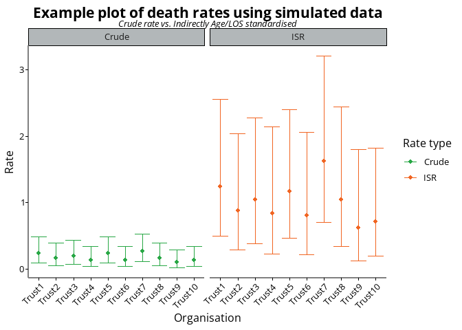

This repository contains an R package to help with various day-to-day tasks in BSOL ICB BI and Data Sciecne teams. It contains various helper functions for things like:
- confidence intervals
- ICB colour palette functions
- ggplot2 and plotly helpers, themes and colour scales
- SQL conversion functions for estimating data types and lengths
- Dispersion ratios and overdispersion calculations
- Standardisation and inequality comparison ratios
This package is not released on CRAN, but can be installed from GitHub using the following command:
# install.packages("remotes")
remotes::install_github("https://github.com/Birmingham-and-Solihull-ICS/BSOLutils")Examples
Confidence interval calcualtions
We often calculate rates, ratios and standardised methods. We have, broadly, followed PHE / UKHSA guidance on methods, with an exception for using Ulm’s methods for standardised rates.
library(BSOLutils)
library(NHSRdatasets)
library(dplyr)
data("LOS_model")
#calculate crude and indirectly (Age and LOS) standardised rates (ISR)
model1 <- glm(Death ~ Age * LOS, data = LOS_model, family = "binomial")
# Use the predicted risk of death per patient from your model
LOS_model$risk_death <- predict(model1, newdata = LOS_model, type = "response")
# Summarise by organisation
LOS_summary <-
LOS_model |>
group_by(Organisation) |>
summarise(Patients = n(),
Deaths = sum(Death),
Predicted_deaths = sum(risk_death))
# Add rate calculations
LOS_summary <-
LOS_summary |>
mutate(Crude_Rate = Deaths / Patients,
ISR_Rate = Deaths / Predicted_deaths)
# Calcualting in isolation
byars_ci(LOS_summary$Deaths, LOS_summary$Patients)
#> Rate LowerCI UpperCI
#> 1 0.2333333 0.09348102 0.4807754
#> 2 0.1666667 0.05371159 0.3889388
#> 3 0.2000000 0.07303286 0.4353250
#> 4 0.1333333 0.03587168 0.3413584
#> 5 0.2333333 0.09348102 0.4807754
#> 6 0.1333333 0.03587168 0.3413584
#> 7 0.2666667 0.11482302 0.5254667
#> 8 0.1666667 0.05371159 0.3889388
#> 9 0.1000000 0.02009909 0.2921788
#> 10 0.1333333 0.03587168 0.3413584
exact_SMR_ci(LOS_summary$Deaths, LOS_summary$Predicted_deaths)
#> Rate LowerCI UpperCI
#> 1 1.2425644 0.4995753 2.560158
#> 2 0.8745683 0.2839700 2.040951
#> 3 1.0480742 0.3846248 2.281216
#> 4 0.8385838 0.2284859 2.147108
#> 5 1.1651140 0.4684362 2.400580
#> 6 0.8034616 0.2189162 2.057181
#> 7 1.6297070 0.7035918 3.211172
#> 8 1.0475907 0.3401498 2.444727
#> 9 0.6153406 0.1268980 1.798286
#> 10 0.7128685 0.1942327 1.825226
# Adding in to a table
LOS_summary <-
LOS_summary |>
mutate(Crude_LowerCI = byars_ci(Deaths, Patients)$LowerCI,
Crude_UpperCI = byars_ci(Deaths, Patients)$UpperCI,
ISR_LowerCI = exact_SMR_ci(Deaths, Predicted_deaths)$LowerCI,
ISR_UpperCI = exact_SMR_ci(Deaths, Predicted_deaths)$UpperCI
)
# Using in a plot
library(ggplot2)
library(tidyr)
library(stringr)
LOS_summary |>
pivot_longer(
cols = matches("^(Crude|ISR)_(Rate|LowerCI|UpperCI)$"),
names_to = c("Rate_type", ".value"),
names_sep = "_"
) %>%
select(Organisation, Rate, Rate_type, LowerCI, UpperCI, everything()) |>
ggplot(aes(x = Organisation, colour = Rate_type, y = Rate)) +
geom_point() +
geom_errorbar(aes(ymax = UpperCI, ymin = LowerCI)) +
facet_grid(~Rate_type, scales = "free_y") +
scale_colour_icb() +
labs(title = "Example plot of death rates using simulated data",
subtitle = "Crude rate vs. Indirectly Age/LOS standardised",
colour = "Rate type") +
theme_icb() +
theme(axis.text.x = element_text(angle = 45, hjust = 1))
SQL-helper functions
When loading data into SQL Server using R, we can rely on implicit conversation but it is not always right. The function below takes and data.frame input (for example the mtcars demo data) and suggests suitable data types for SQL Server import.
derive_sql_data_types(LOS_model)
#> Warning in .f(.x[[i]], ...): No SQL mapping defined for R class 'ordered'.
#> Using varchar(max).
#> ID Organisation Age LOS Death
#> "int" "varchar(max)" "int" "int" "int"
#> risk_death
#> "float"Licence
This repository is dual licensed under the Open Government v3 & MIT. All code and outputs are subject to Crown Copyright.